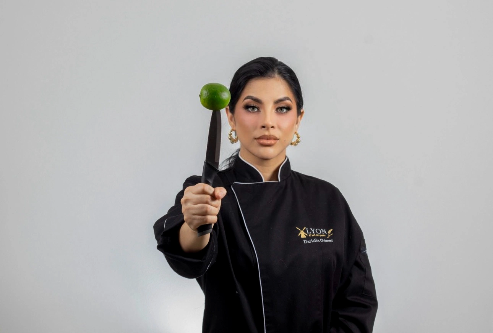

Sobre mí

Dariella Gómez
Chef · Especialista en Alimentación Saludable · Health Coach en formación
Contadora Pública · Máster en Finanzas · Diseñadora de Interiores
¡Hola! Soy Dariella Gómez, una mujer apasionada por el bienestar integral, la cocina consciente y la transformación positiva a través de la alimentación.
Mi camino comenzó en el mundo empresarial como Contadora Pública, con un Máster en Finanzas, lo que me dio una visión estratégica y estructurada para liderar proyectos y negocios con propósito. Más adelante, mi sensibilidad por la estética y el diseño me llevó a explorar mi faceta creativa como Diseñadora de Interiores, entendiendo que los espacios también nutren nuestro bienestar.
Pero fue en la cocina donde encontré mi verdadera vocación. Me formé como Chef en la Escuela de Estudios Superiores de Hostelería (ESAH), en Madrid, España, y me especialicé en alimentación saludable, funcional y libre de aditivos. Desde entonces, he desarrollado propuestas gastronómicas conscientes y productos de alto valor nutricional y experiencias que van más allá del sabor: alimentan cuerpo, mente y alma.
Actualmente, me estoy certificando como Health Coach en Nutrición Moderna, profundizando en la conexión entre la comida, la salud emocional y los hábitos sostenibles.
A través de Lyon Bakery, combino todo lo que soy: la estructura de las finanzas, la sensibilidad del diseño y la creatividad de la cocina, para ofrecer productos y servicios que transforman vidas desde la alimentación.
Gracias por estar aquí. Este espacio es para ti, que también crees en una vida más saludable, rica y equilibrada.